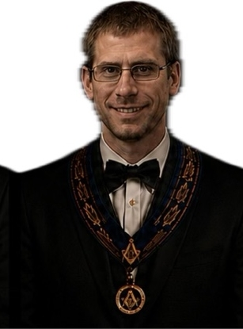
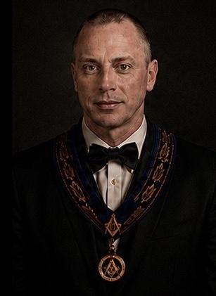
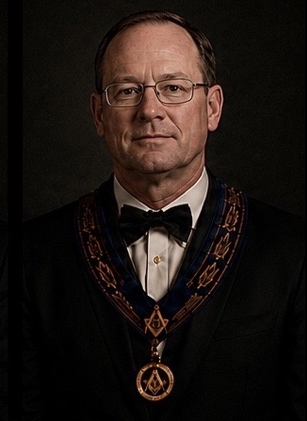
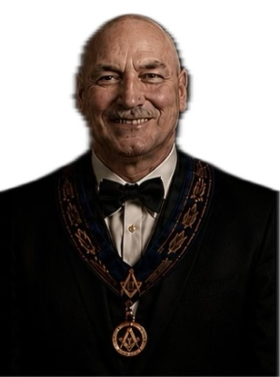
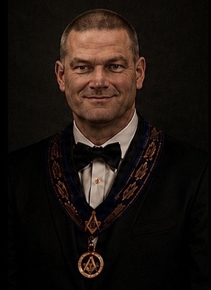

W. Bro. Wesley Thompson
Worshipful Master
From the first officers of 1843 to the brethren serving today, this archive preserves the leadership and continuity of St. John’s Lodge No. 63.

Worshipful Master

Immediate Past Master

Senior Warden

Junior Warden

Treasurer

Secretary

Chaplain

Senior Deacon

Junior Deacon

Director of Ceremonies

Inner Guard
Tyler

Stewards

Stewards

Web Developer
The archive stays compact by using nested accordions: each century opens into decades. Historical decades list the Worshipful Master for each year, and the current year keeps a full officer roster.
Worshipful Masters from 2000 to 2018 are listed from the lodge history. The 2025–26 entry is the current officer roster.
| Office | Name | Notes |
|---|---|---|
| Worshipful Master | Wesley Thompson | Current |
| Immediate Past Master | Corey Snow | Current officer |
| Senior Warden | Peter Schmidt | Current officer |
| Junior Warden | Greg Forsyth | Current officer |
| Treasurer | Mark Dorland | Current officer |
| Secretary | Andrew Valley | Current officer |
| Chaplain | Donovan Hastie | Current officer |
| Senior Deacon | James Hamilton | Current officer |
| Junior Deacon | Frank Horan | Current officer |
| Director of Ceremonies | Steve Kipp | Current officer |
| Inner Guard | Alan Gschwind | Current officer |
| Tyler | Phil Tanner | Current officer |
| Stewards | Braden Rogers and Duncan Rogers | Current officer |
| Year | Worshipful Master |
|---|---|
| 2010–2011 | Shawn Todd |
| 2011–2012 | Steve Kipp |
| 2012–2013 | Gord Echlin |
| 2013–2014 | Corey Snow |
| 2014–2015 | Donovan Hastie |
| 2015–2016 | Andrew Valley |
| 2016–2017 | Joseph Tereschuk |
| 2017–2018 | Rob Clow |
| Year | Worshipful Master | Note |
|---|---|---|
| 2000–2001 | Phil Pilon | |
| 2001–2002 | Eric Morgan | |
| 2002–2003 | Rob Gracie | W. Bro. Rob Gracie died September 25, 2002. W. Bro Jim McIsaac was elected to fill the Chair of King Solomon for the remainder of the year 2002 - 2003; however, Past Masters took turns sitting in the East at each meeting. |
| 2003–2004 | Blane Mercier | |
| 2004–2005 | Ivor Bayley | |
| 2005–2006 | Michael Hoult | |
| 2006–2007 | Phil Pilon | |
| 2007–2008 | Bernie Duffen | |
| 2008–2009 | Phil Pilon | |
| 2009–2010 | Harry Baker |
Worshipful Masters from the lodge Past Masters list.
| Year | Worshipful Master |
|---|---|
| 1990–91 | Harry Baker |
| 1991–92 | Robin Rogers |
| 1992–93 | J. Gary Nicholson |
| 1993–1994 | Paul E. Todd |
| 1994–1995 | Arthur Nash |
| 1995–1996 | Steve Rothwell |
| 1996–1997 | Miles Kirkendall |
| 1997–1998 | James Birtch |
| 1998–1999 | Ron Hodgins |
| 1999–2000 | Jim McIsaac |
| Year | Worshipful Master |
|---|---|
| 1980–81 | G.A. Docker |
| 1981–82 | Harry Morris |
| 1982–83 | Garry Murphy |
| 1983–84 | Ian Doig |
| 1984–85 | Mervin Bonney |
| 1985–86 | Fraser Ellis |
| 1986–87 | Roy Coker |
| 1987–88 | Ian Bowen |
| 1988–89 | Brent Reid |
| 1989–90 | Albert Lackey |
| Year | Worshipful Master |
|---|---|
| 1970–71 | G.A. Docker |
| 1971–72 | R.E. Shane |
| 1972–73 | M. Ward Crampton |
| 1973–74 | Andrew J. Dickie |
| 1974–75 | Dietor R. Jeschor |
| 1975–76–77 | Clarence Cassibo |
| 1977–78 | John Tennant |
| 1978–79 | Douglas Gibson |
| 1979–80 | Victor Gilmour |
| Year | Worshipful Master |
|---|---|
| 1960–61 | W.E.S. Root |
| 1961–62 | G.C. Crampton |
| 1962–63 | W.J. Armstrong |
| 1963–64 | F.K. McEwen |
| 1964–65 | J.A. Hobbs |
| 1965–66 | Cecil R. Ruttle |
| 1966–67 | G.M. Nobes |
| 1967–68 | T. Harold James |
| 1968–69 | Clarence Cassibo |
| 1969–70 | W. Howard Edwards |
| Year | Worshipful Master |
|---|---|
| 1951–52 | F.J. Vout |
| 1952–53 | R.C. Wilson |
| 1953–54 | A.A. Wright |
| 1954–55 | F.A. McTavish |
| 1955–56 | W.W.W. Whyte |
| 1956–57 | G.M. Gladish |
| 1957–58 | R.I. Cross |
| 1958–59 | H.M. Morris |
| 1959–60 | D.H. Menzies |
| Year | Worshipful Master |
|---|---|
| 1940 | J.G. Patterson |
| 1941 | W.S. Bellamy |
| 1942 | J.G. Simpson |
| 1943 | W.R. McIlquham |
| 1944 | E.R. Fee |
| 1945 | J.D. McAdam |
| 1946 | T.J. Steele |
| 1947 | M.P. Morris |
| 1948 | H.C. Skinner |
| 1949–50 | A.J. Illingworth |
| Year | Worshipful Master |
|---|---|
| 1930 | C.G. Dowdall |
| 1931 | L.J. McDiarmid |
| 1932 | W.W. Pollock |
| 1933 | T.E. Nichols |
| 1934 | J.C. Spence |
| 1935 | J.W. Morphy |
| 1936–37 | W.F. Baird |
| 1938 | M.W. Rogers |
| 1939 | J.S. Stark |
| Year | Worshipful Master |
|---|---|
| 1920–21 | J.A. McEwen, M.D. |
| 1922 | J.H. Bond |
| 1923 | W.P. Pattie |
| 1924 | H.A. McFadden |
| 1925 | H.E. Sinclair |
| 1926 | F.C. McDiarmid |
| 1927 | H.E. Menzies |
| 1928 | W.J. Hughes |
| 1929 | H.N. Steet |
| Year | Worshipful Master |
|---|---|
| 1910 | N.C. McAllister |
| 1911 | A.H. Edwards |
| 1912 | J.A. McLaren |
| 1913 | J.W. Patterson |
| 1914 | R.C. Patterson |
| 1915 | H.W. Dummert |
| 1916 | F.C. McDiarmid |
| 1917 | W.J. Porterfield |
| 1918 | J.S.L. McNeely |
| 1919 | A.O. Fleming |
| Year | Worshipful Master |
|---|---|
| 1900 | Thomas Fraser |
| 1901 | Thomas Barrie |
| 1902 | T.C. Hudson |
| 1903 | P.A. Garvin |
| 1904 | J.C. Switzer |
| 1905 | W.J. Muirhead |
| 1906 | G.H. Findlay |
| 1907 | J.R. Hamilton |
| 1908 | W.H. Hooper |
| 1909 | J.R. Moore |
Worshipful Masters from the lodge Past Masters list, beginning with the first Master in 1843.
| Year | Worshipful Master |
|---|---|
| 1890–91 | Frank Donald |
| 1892–93 | W.M. Dunham |
| 1894 | J.D. Taylor |
| 1895 | W.R. Williamson |
| 1896 | E.G.P. Pickup |
| 1897 | R.J. Morgan |
| 1898 | D.H. McIntosh, M.D. |
| 1899 | A.S. Gorrell, M.D. |
| Year | Worshipful Master |
|---|---|
| 1880 | C.G. Stackhouse |
| 1881 | David McNabb |
| 1882 | George Douglas |
| 1883–85 | R.F. Preston, M.D. |
| 1886–87 | William F. Latimer |
| 1888 | William Sutherland |
| 1889 | William Shanks |
| Year | Worshipful Master |
|---|---|
| 1872 | John McArten |
| 1873 | Nelson Lee |
| 1874–75 | David McNabb |
| 1876 | William Weir |
| 1877 | David McNabb |
| 1878 | C.G. Stackhouse |
| 1879 | James Shilson |
| Year | Worshipful Master |
|---|---|
| 1860 | David McNabb |
| 1861 | Brice McNeely |
| 1862–63 | James Poole |
| 1864–65 | James Dunlop |
| 1866–71 | David McNabb |
| Year | Worshipful Master |
|---|---|
| 1850–59 | Wm. Houston |
| Year | Worshipful Master |
|---|---|
| 1843–49 | Brice McNeely (The Tanner) |
The following brethren signed the Petition for Dispensation in November 1842 and formed the nucleus of St. John's Lodge prior to its first installation on January 20, 1843.
| Name | Role | Source / Note |
|---|---|---|
| Brice McNeeley | First Worshipful Master | Signed 1842 Petition for Dispensation; installed Master Jan. 20, 1843 |
| William Rea | First Senior Warden | Signed 1842 Petition; installed Senior Warden |
| James Robinson | First Junior Warden | Signed 1842 Petition; installed Junior Warden |
| James McNeeley | Charter Member | Signer of original petition |
| John Moore | Charter Member | Signer of original petition |
| Peter Carmichael | Charter Member | Signer of original petition |
| John McIntyre | Charter Member | Signer of original petition |
| Andrew Paul | Charter Member | Signer of original petition |
| Peter McGregor | Charter Member | Signer of original petition; Franktown, Beckwith |